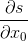

PyTorch介绍
Torch张量库介绍
所有的深度学习都是在张量上计算的,其中张量是一个可以被超过二维索引的矩阵的一般化. 稍后我们将详细讨论这意味着什么.首先,我们先来看一下我们可以用张量来干什么.
# 作者: Robert Guthrie
import torch
import torch.autograd as autograd
import torch.nn as nn
import torch.nn.functional as F
import torch.optim as optim
torch.manual_seed(1)
Creating Tensors(创建张量)
张量可以在Python list形式下通过torch.Tensor()函数创建.
# 利用给定数据创建一个torch.Tensor对象.这是一个一维向量
V_data = [1., 2., 3.]
V = torch.Tensor(V_data)
print(V)
# 创建一个矩阵
M_data = [[1., 2., 3.], [4., 5., 6]]
M = torch.Tensor(M_data)
print(M)
# 创建2x2x2形式的三维张量.
T_data = [[[1., 2.], [3., 4.]],
[[5., 6.], [7., 8.]]]
T = torch.Tensor(T_data)
print(T)
什么是三维张量? 让我们这样想象.如果你有一个向量,那么对向量索引就会得到一个标量. 如果你有一个矩阵,对矩阵索引那么就会得到一个向量.如果你有一个三维张量,那么对其索引 就会得到一个矩阵!
针对术语的说明: 当我在本教程内使用”tensor”,它针对的是所有torch.Tensor对象.矩阵和向量是特殊的torch.Tensors, 他们的维度分别是1和2.当我说到三维张量,我会简洁的使用”3D tensor”.
# 索引V得到一个标量
print(V[0])
# 索引M得到一个向量
print(M[0])
# 索引T得到一个矩阵
print(T[0])
你也可以创建其他数据类型的tensors.默认的数据类型为Float(浮点型). 可以使用torch.LongTensor()来 创建一个整数类型的tensor.你可以在文件中寻找更多的数据类型,但是Float(浮点型)和Long(长整形)最常用的.
你可以使用torch.randn()创建一个随机数据和需要提供维度的tensor.
x = torch.randn((3, 4, 5))
print(x)
Operations with Tensors(对tensor进行操作)
你可以以你想要的方式操作tensor.
x = torch.Tensor([1., 2., 3.])
y = torch.Tensor([4., 5., 6.])
z = x + y
print(z)
可以查阅 文档 获取大量可用操作的完整列表, 扩展到了非数学操作.
接下来一个很有帮助的操作就是连接.
# 默认情况下, 它沿着第一轴连接 (连接行)
x_1 = torch.randn(2, 5)
y_1 = torch.randn(3, 5)
z_1 = torch.cat([x_1, y_1])
print(z_1)
# 连接列:
x_2 = torch.randn(2, 3)
y_2 = torch.randn(2, 5)
# 第二个数指定了沿着哪条轴连接
z_2 = torch.cat([x_2, y_2], 1)
print(z_2)
# 如果你的tensors是不兼容的,torch会报错.取消注释来查看错误.
# torch.cat([x_1, x_2])
Reshaping Tensors(重构Tensors)
使用.view()去重构tensor.这是一个高频方法, 因为许多神经网络的神经元对输入格式 有明确的要求. 你通常需要先将数据重构再输入到神经元中.
x = torch.randn(2, 3, 4)
print(x)
print(x.view(2, 12)) # 重构为2行12列
# 同上.如果维度为-1,那么它的维度根据数据推断出来
print(x.view(2, -1))
Computation Graphs and Automatic Differentiation(计算图和自动求导)
计算图的思想对于有效率的深度学习编程是很重要的, 因为它允许你不必去自己写反向梯度传播. 计算图只是简单地说明了如何将数据组合在一起以输出结果.因为图完全指定了操作所包含的参数, 因此它包含了足够的信息去求导.这可能听起来很模糊, 所以让我们看看使用Pytorch的基本类: autograd.Variable.
首先, 从程序员的角度来思考.在torch中存储了什么, 是我们在上面创建的Tensor对象吗? 显然, 是数据和 结构, 也很可能是其他的东西. 但是当我们将两个tensors相加后, 我们得到了一个输出tensor.这个输出所能 体现出的只有数据和结构, 并不能体现出是由两个tensors加和得到的(因为它可能是从一个文件中读取的, 也可能是 其他操作的结果等).
变量类别可以一直跟踪它是如何创建的.让我们在实际中来看.
# 变量围绕tensor对象
x = autograd.Variable(torch.Tensor([1., 2., 3]), requires_grad=True)
# 您可以使用.data属性访问数据.
print(x.data)
# 你也可以用变量来做与张量相同的运算.
y = autograd.Variable(torch.Tensor([4., 5., 6]), requires_grad=True)
z = x + y
print(z.data)
# 但是z知道一些额外的东西.
print(z.grad_fn)
既然变量知道怎么创建的它们. z知道它并非是从文件读取的, 也不是乘法或指数或其他运算的结果. 如果你继续跟踪 z.grad_fn, 你会从中找到x和y的痕迹.
但是它如何帮助我们计算梯度?
# 我们来将z中所有项作和运算
s = z.sum()
print(s)
print(s.grad_fn)
那么这个计算和对x的第一个分量的导数等于多少? 在数学上,我们求

s知道它是被tensor z的和创建的.z 知道它是x+y的和
z_0 z_1
z_1 z_2
z_2
并且s包含了足够的信息去决定我们需要的导数为1!
当然它掩盖了如何计算导数的挑战.这是因为s携带了足够多的信息所以导数可以被计算.现实中,Pytorch 程序的开发人员用程序指令sum()和 + 操作以知道如何计算它们的梯度并且运行反向传播算法.深入讨论此算法 超出了本教程的范围.
让我们用Pytorch计算梯度,发现我们是对的:(如果你运行这个方块很多次,梯度会上升,这是因为Pytorch accumulates (累积) 渐变为.grad属性, 因为对于很多模型它是很方便的.)
# 在任意变量上使用 .backward()将会运行反向,从它开始.
s.backward()
print(x.grad)
对于一个成功的深度学习程序员了解下面的方块如何运行是至关重要的.
x = torch.randn((2, 2))
y = torch.randn((2, 2))
z = x + y # 这些是Tensor类型,反向是不可能的
var_x = autograd.Variable(x, requires_grad=True)
var_y = autograd.Variable(y, requires_grad=True)
# var_z 包含了足够的信息去计算梯度,如下所示
var_z = var_x + var_y
print(var_z.grad_fn)
var_z_data = var_z.data # 从 var_z中得到包裹Tensor对象...
# 在一个新的变量中重新包裹tensor
new_var_z = autograd.Variable(var_z_data)
# new_var_z 有去反向x和y的信息吗?
# 没有!
print(new_var_z.grad_fn)
# 怎么会这样? 我们将 tensor 从 var_z 中提取 (提取为var_z.data). 这个张量不知道它是如
# 何计算的.我们把它传递给 new_var_z.
# 这就是new_var_z得到的所有信息. 如果 var_z_data 不知道它是如何计算的, 那么就不会有 new_var_z 的方法.
# 从本质上讲, 我们已经把这个变量从过去的历史中分离出来了.
#
这就是基础的,但是对于计算自动求导是特别重要的规则 (这比Pytorch更通用,在每个主要的深度学习工具箱中都有一个相同的对象):
如果你想要从损失函数返回到神经网络的某个神经元得到错误,那么你就不能将断开从该组件到你的丢失变量的变量链.如果你这样做, 损失将不知道你的组件存在, 并且它的参数不能被更新.
我用粗体表示, 因为这个错误会在不经意间发生(我将在下面展示一些这样的方法), 并且它不会导致您的代码崩溃或报错, 所以您必须小心.